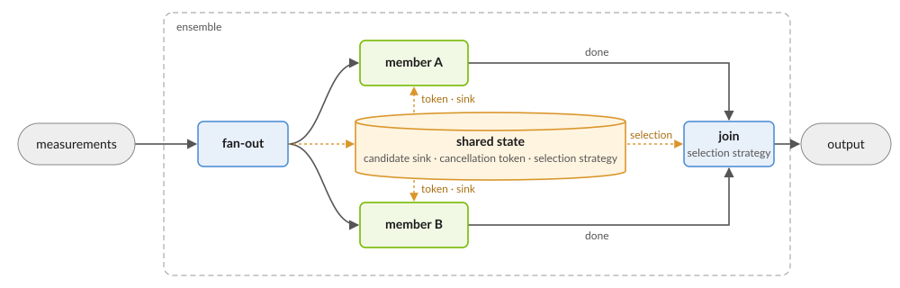

Task Graph Decoder Ensembles
An ensemble task graph runs several member graphs on the same input at
the same time and keeps one answer. Use it to orchestrate decoders that trade speed
for accuracy differently, or to bound the time to an answer with a deadline.
This page builds on Decoding Task Graphs.
How it works

Every member receives the ensemble’s input and decodes it concurrently.
A member’s answer is a candidate: a
logical_outcome, the id of the node that produced it and, when the decoder reports one, a cost, lower being better.The selection strategy, specified by
join_strategy, sees every candidate as it arrives and decides which one to keep. Once it decides, the other members are asked to stop. Thedoneedges only order the join after every member has finished; candidates travel through the shared sink.The ensemble’s
outputis thelogical_outcomeselected by the strategy. Every member must answer with alogical_outcomeof the same size. If no candidate is kept, the run throws.
Configuration
This ensemble races PyMatching against the NV-qLDPC decoder and keeps the cheapest answer available 200 microseconds after each shot arrives:
nodes:
- id: ens
type: ensemble
join_strategy: deadline
join_params: {deadline_us: 200}
members:
- nodes: [{id: a, type: single_window, inner: {type: pymatching}}]
edges: [{from: input, to: a}, {from: a, to: output}]
- nodes:
- {id: b, type: single_window, inner: {type: nv-qldpc-decoder}}
edges:
- {from: input, to: b}
- {from: b, to: output}
edges:
- {from: measurements, to: ens}
- {from: ens, to: output}
Parameter |
Meaning |
|---|---|
|
The member graphs, each a list of nodes and the edges among them.
Members name the ensemble’s input |
|
How the answer is chosen. |
|
The strategy’s parameters. |
|
On a member’s window node: pass the run’s cancellation token to the
node’s decoder, so it can stop when asked. Default |
|
On a member’s window node: push each outcome as a candidate itself,
instead of through an edge to |
Cancellation is cooperative. A decoder that never checks its token runs to
completion and delays the result; a decoder that honors a stop may
return std::nullopt if a result is not ready before the stop is requested.
Building a graph in code
The same graph, built with
from_topology() from window node configs
a and b:
def edge(from_node, to_node):
e = qec.task_graph_edge()
e.from_node, e.from_output = from_node, "output"
e.to_node, e.to_input = to_node, "input"
return e
ens = qec.TaskGraphEnsembleSpec()
ens.join_strategy = "deadline"
ens.join_params = {"deadline_us": 200}
ens.add_member([a], [edge("input", "a"), edge("a", "output")])
b.node_params = {"cancellable": True}
ens.add_member([b], [edge("input", "b"), edge("b", "output")])
node = qec.TaskGraphNodeConfig()
node.id = "ens"
node.kind = "ensemble"
node.ensemble = ens
graph = qec.DecodingTaskGraph.from_topology([node])
task_graph_ensemble_spec ens;
ens.join_strategy = "deadline";
ens.join_params.insert("deadline_us", 200);
task_graph_ensemble_spec::member ma, mb;
ma.nodes.push_back(std::move(a));
ma.edges = {{"input", "output", "a", "input"}, {"a", "output", "output", "input"}};
b.node_params.insert("cancellable", true);
mb.nodes.push_back(std::move(b));
mb.edges = {{"input", "output", "b", "input"}, {"b", "output", "output", "input"}};
ens.members.push_back(std::move(ma));
ens.members.push_back(std::move(mb));
task_graph_node_config node;
node.id = "ens";
node.kind = "ensemble";
node.ensemble = std::move(ens);
std::vector<task_graph_node_config> nodes;
nodes.push_back(std::move(node));
auto graph = decoding_task_graph::from_topology(std::move(nodes));
Extending ensembles
The hooks below are for decoder and plugin authors.
Reporting a cost
A window node reads the cost from the cost key of its decoder’s
opt_results, as a double.
def decode(self, syndrome):
r = qec.DecoderResult()
# ...
r.opt_results = {"cost": float(weight_of(r.result))}
return r
decoder_result my_decoder::decode(const std::vector<float_t> &syndrome) {
decoder_result r = /* ... */;
r.opt_results = cudaqx::heterogeneous_map{};
r.opt_results->insert("cost", weight_of(r.result));
return r;
}
Honoring cancellation
A C++ decoder overrides decode(syndrome, cancellation_token) and may return
std::nullopt if a stop is requested before a result is ready. The token
has two levels, soft and hard, and only ever escalates; a decoder chooses
which level it reacts to where it polls.
std::optional<decoder_result>
my_decoder::decode(const std::vector<float_t> &syndrome,
cancellation_token tok) {
for (int iter = 0; iter < max_iters; ++iter) {
if (tok.stop_requested()) // soft or hard; pass
return std::nullopt; // cancellation_level::hard to ignore soft stops
/* one iteration */
}
return decode(syndrome);
}
Pushing candidates
Every run owns one candidate sink, a thread-safe queue. A node that accepts
a candidate_sink input receives it and may push as many candidates as it
likes; such a member must not also reach output. A window node with
push_candidates: true pushes each outcome this way:
- nodes:
- id: b
type: single_window
inner: {type: my_decoder}
push_candidates: true # takes the run's sink; pushes each outcome
cancellable: true # takes the run's token; stops when asked
edges:
- {from: input, to: b} # no edge to output: b pushes for itself
A C++ node kind pushes from its own code:
const auto &sink = inputs[sink_slot].get<candidate_sink>();
sink.push(outcome, id_, cost); // cost is optional
Adding a selection strategy
A C++ module adds a strategy with register_selection_strategy() and keeps
the returned registration alive while its code is loaded. The strategy’s
offer() sees every candidate as it is pushed; returning a value commits
to it and stops the other members. finish() may be overridden to choose
once every member is done and nothing committed. A candidate’s producer
is the id of the node that pushed it, prefixed by the ensemble and member
index, such as ens.m1.b; one from an edge to output reports
ens.m0.push.
// Commits to the first candidate from a named member.
struct prefer_member : cudaq::qec::selection_strategy {
std::string who;
std::optional<logical_outcome> offer(const candidate &c) override {
return c.producer == who ? std::optional(c.result) : std::nullopt;
}
};
using namespace cudaq::qec::decoding::config;
decoder_schema schema;
schema.params = {{"member", param_kind::string, /*required=*/true}};
static auto reg = cudaq::qec::register_selection_strategy(
"prefer_member", schema, [](const cudaqx::heterogeneous_map &p) {
auto s = std::make_unique<prefer_member>();
s->who = p.get<std::string>("member");
return s;
});